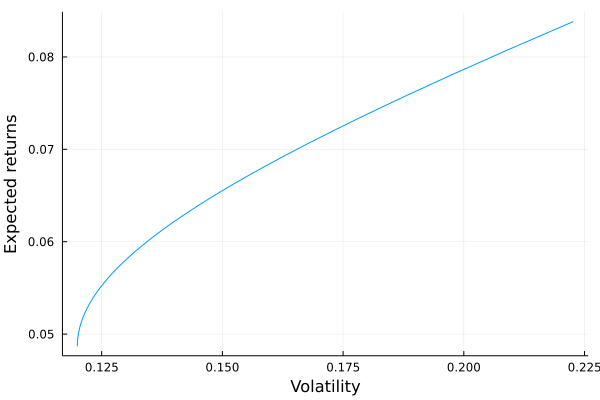

Optimal portfolio: the Markowitz QP formulation
We have two equivalent optimization problems:
- Maximizing the expected return of the portfolio under a volatility constraint ($\sigma$-problem):
\[\begin{equation*} \begin{aligned} & \text{max} && \mu (x) &&& {\text{u.c.}} &&&& \sigma(x) \leq \sigma^* \\ \end{aligned} \end{equation*}\]
- Or minimizing the volatility of the portfolio under a return constraint ($\mu$-problem):
\[\begin{equation*} \begin{aligned} & \text{min} && \sigma(x) &&& {\text{u.c.}} &&&& \mu(x) \geq \mu^*\\ \end{aligned} \end{equation*}\]
Markowitz transforms the two original non-linear optimization problems into a quadratric optimization problem:
\[\begin{equation*} \begin{aligned} & x^*(\phi) = & & {\text{arg max}} x^T \mu - \frac{\phi}{2}x^T \Sigma x\\ & \text{u.c.} & & 1^T_n x = 1 \\ \end{aligned} \end{equation*}\]
where $\phi$ is a risk-aversion parameter:
if $\phi = 0$ we have $\mu(x^*(0)) = \mu^+$ (ie. the optimized portfolio is the one that maximizes the expected returns)
if $\phi = \infty$, the optimization problem becomes:
\[\begin{equation*} \begin{aligned} & x^*(\infty) = & & {\text{arg min}} \frac{1}{2}x^T \Sigma x\\ & \text{u.c.} & & 1^T_n x = 1 \\ \end{aligned} \end{equation*}\]
We have, in this case, $\sigma(x^*(\infty)) = \sigma^-$. This is the minimum variance (or MV) portfolio (ie. the portfolio that minimizes the volatility).
Let's implement this $\phi$-problem formulation:
using JuMP, COSMO # Packages for optimization
function optimal_portfolio_markowitz(μ::Vector{Float64}, Σ::Matrix, ϕ::Float64)::Vector{Float64}
n = length(μ) # number of assets
model = JuMP.Model(COSMO.Optimizer) # we load COSMO solver
@variable(model, x[1:n]) # the optimal weights we want to find
@objective(model, Max, x' * μ - ϕ/2 * x' * Σ * x) # the markowitz formulation
@constraint(model, ones(n)' * x == 1) # the only constraint we got for now
JuMP.optimize!(model) # solve the model
x_opt = JuMP.value.(x) # obtain the optimal weights
return x_opt
end
μ = [0.05, 0.06, 0.08, 0.06] # same expected returns
Σ = [
0.0225 0.003 0.015 0.0225
0.003 0.04 0.035 0.024
0.015 0.035 0.0625 0.06
0.0225 0.024 0.06 0.09
] # the covariance matrixLet's test with a value of $\phi = 0.2$:
x_opt = optimal_portfolio_markowitz(μ, Σ, 0.2)We get:
-0.33746115671814536
-3.034877788599787
8.06224201103845
-3.6899030657205145And we have the following expected returns
portf = Portfolio(μ = μ, σ = σ, C = C, Σ = Σ, x = x_opt)
returns = get_portfolio_return(portf)0.2246194517879506and volatility:
volatility = get_portfolio_volatility(portf)0.9456799462474924Let's simulate simulate this for several $\phi$ values and plot the resulting efficient frontier:
phis = [i for i in 1:0.1:500]
returns = zeros(length(phis))
volatility = zeros(length(phis))
for i in 1:length(phis)
x = optimal_portfolio_markowitz(μ, Σ, phis[i])
portf = Portfolio(μ = μ, σ = σ, C = C, Σ = Σ, x = x)
returns[i] = get_portfolio_return(portf)
volatility[i] = get_portfolio_volatility(portf)
end
plot(volatility, returns, seriestype = :line, label = "",
xlabel = "Volatility", ylabel = "Expected returns")
Solving $\mu-$ and $\gamma-$ problems
Solving the $\mu$-problem or the $\sigma$-problem is equivalent to finding the optimal value of $\phi$ such that:
\[\mu(x^*(\phi))=\mu^*\]
or:
\[\sigma(x^*(\phi))=\sigma^*\]
We know that:
- the functions $\mu(x^*(\phi))$ and $\sigma(x^*(\phi))$ are decreasing with respect to $\phi$
- the functions $\mu(x^*(\phi))$ and $\sigma(x^*(\phi))$ are bounded
Then, we can find the optimal value of $\phi$ (ie. the value of $\phi$ to attain a specific target of $\sigma^*$ or $\mu^*$) using the bisection algorithm (Newton-Raphson algorithm).